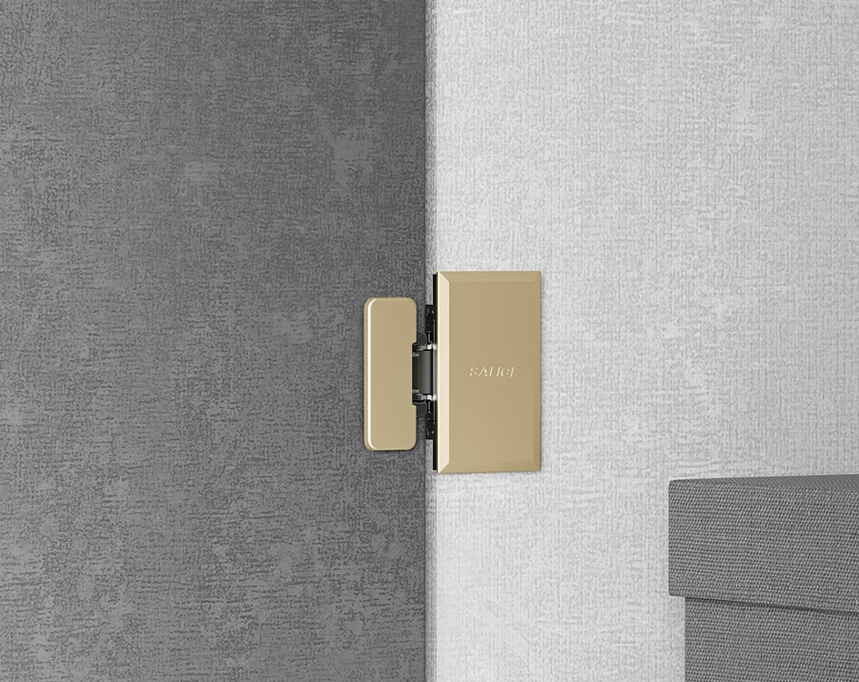

CREATURA
SALICE
07 / 22
Петли · врезные

CONECTA
Для деревянных и алюминиевых фасадов
Петля с утапливаемой установкой в фасад и в боковину.
Открывание
94° и 180°
Толщина фасада
22–30 мм
Боковина
от 16 мм